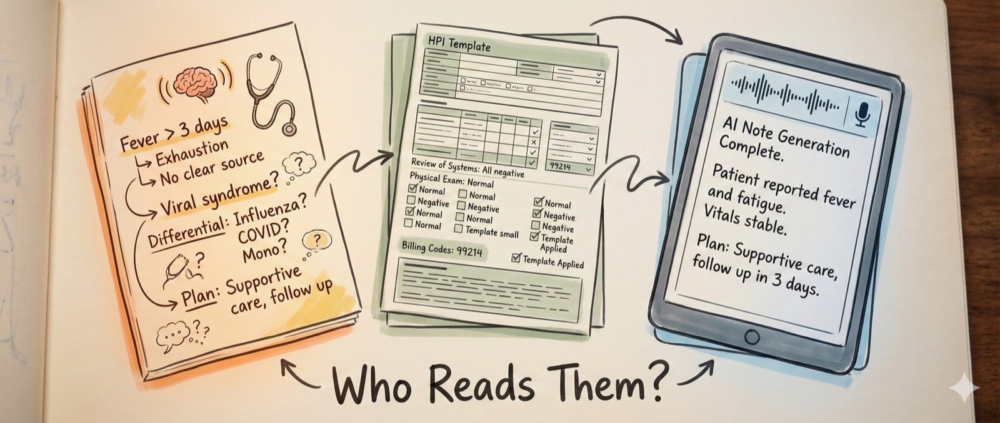
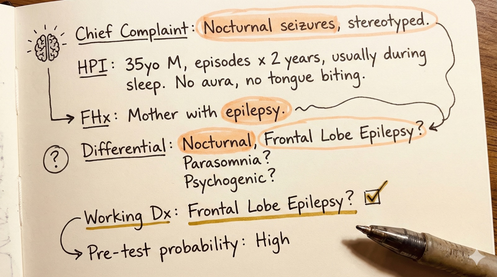
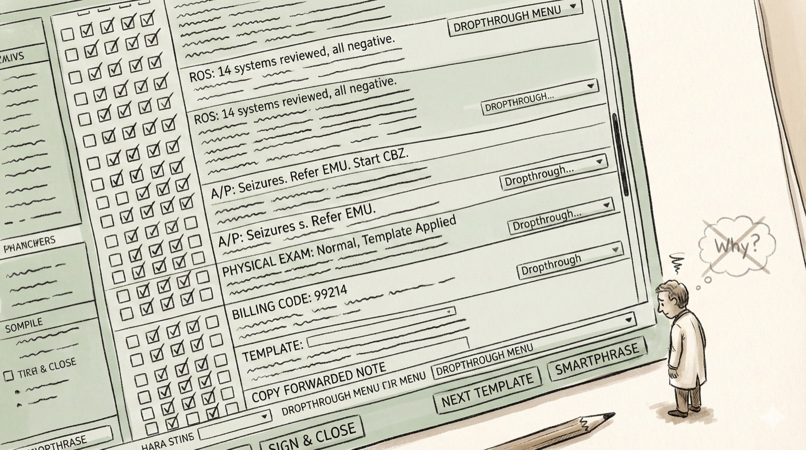
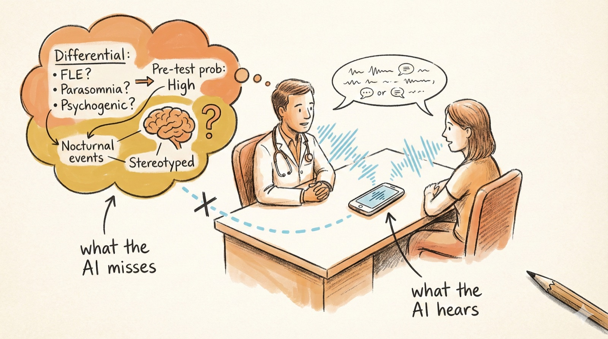
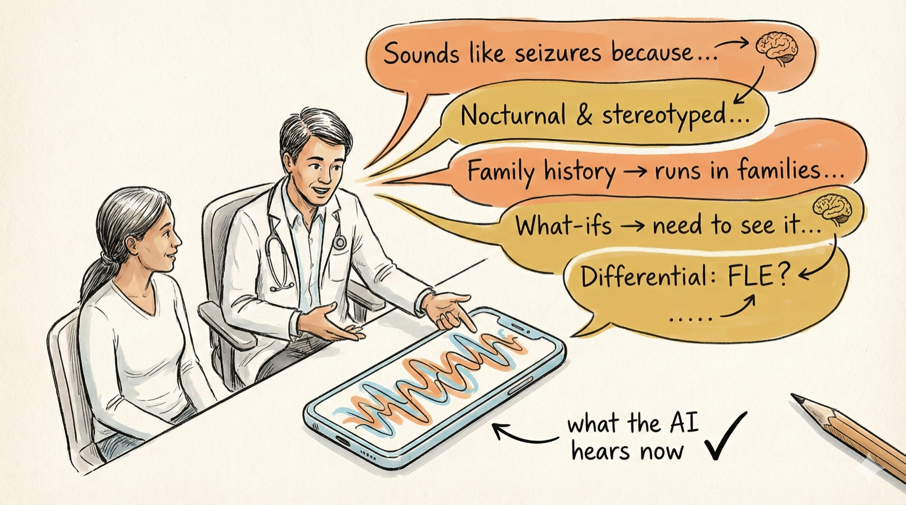

Who reads physician's notes?
On documentation, reasoning, and the coming crisis of clinical identity.
On documentation, reasoning, and the coming crisis of clinical identity.
Published February 13, 2026. Public links: Substack and LinkedIn.

The original post was in Chinese, as I wrote this piece in Chinese to my fellow physicians practicing in China. Strangely enough, they do not use ambient scribes like we do here in the States, but knowing how AI is rapidly progressing in that part of the world, I felt the piece may serve some value.
The question I raised was not a hard one: who do we write our notes for?
For most of medicine's modern history, the note served as the physician's externalized mind: a place to narrate the patient's story, document the reasoning behind a diagnosis, and leave a trail for oneself or the next clinician to follow.
We wrote for ourselves and our colleagues.
Then that mind was put to other uses. The note became a billing artifact, written to satisfy the insurance company's ever-changing requirements. A legal shield to protect the physician. Still useful, but bloated, and no longer the physician's own.
In a slightly exacerbated manner, we wrote for who paid for our salary, the insurance lord.
Now, in the age of artificial intelligence, we must ask again a question that sounds simple but carries profound implications: who are we writing the notes for?
The honest answer is, however, more complicated than I thought.
The note is increasingly written by one machine and read by another. The physician, once both author and audience, is becoming a bystander to documentation that was originally designed as a tool for human thought.
There is a version of the clinical note that most physicians will no longer write themselves but instinctively recognize as what documentation should be:

A 22-year-old right handed man with a strong family history of epilepsy, presented with recurrent episodes of abnormal movements out of sleep.
There is a short list of differentials, but I suspect frontal lobe epilepsy is high on differential, because of the stereotypical and nocturnal nature of the events, and a strong family history. Cannot completely rule out sleep disorders, will refer patient for a diagnostic EMU.
Given the frequency of the events, high pre-test probability, I will empirically start carbamazepine.
In this version, the note does not merely record what occurred, it externalizes and refines reasoning. When a physician writes down their reasoning, the act of writing forces a commitment. It demands that the reasoning be articulated, that the differential be narrowed, that the physician take a stand.
It is the mechanism by which expertise is exercised and maintained. The note, at its best, is a metacognitive checkpoint, a moment where the physician pauses to ask, "What do I actually think, and why?"
But this version of the note has been dying for years, long before AI arrived. The electronic health record transformed documentation from a cognitive act into a billing artifact. The note became optimized for compliance, not for thought. Review of systems expanded to absurd lengths. Assessment and plan sections were buried under copy-forwarded templates, reduced to bullet points full of abbreviations.

Consider how that same epilepsy case might appear in a billing-optimized note: a fourteen-system review of systems, all negative except "positive for abnormal movements." An assessment that reads "Possible seizures - refer to EMU, start CBZ 300mg BID, follow up 3 months." The what is preserved. The why is gone. No mention of the family history's weight in the reasoning, no explanation of why frontal lobe epilepsy and not something else, no acknowledgment of the diagnostic uncertainty that made the EMU necessary.
The note grew longer and said less. Physicians stopped writing to think and started writing to get paid.
Ambient AI promises to solve the documentation burden. Systems like DAX Copilot, Abridge, and others listen to the clinical encounter and generate a note automatically. The physician reviews, signs, and moves on. The time saved is real. The relief is genuine. For physicians drowning in pajama-time documentation, this feels like liberation.
But consider what has happened. The note is now a transcription of the encounter's observable surface: what was said, what was examined, what was ordered.
It captures the visible interaction between patient and physician. What it does not capture is the inferential work underneath: the silent reasoning, the Bayesian updating, the pattern recognition, the diagnoses considered and discarded before the physician ever spoke.
The ambient AI does not know why I paused on a particular detail, what my pre-test probability was before I walked in the room, or which part of the patient's story changed my mind.

The note becomes faithful to a process it cannot see. And if the physician does not add what the machine missed, the reasoning simply disappears. It was never written down. It lives only in the physician's head, and then it is gone.
If we are to preserve what matters about clinical documentation, we need to recognize that good documentation serves two distinct audiences, and we are currently failing both. There is, in fact, a third audience: the patient. Since the 21st Century Cures Act mandated open notes, patients now read what we write about them. But the patient reads for understanding, not for reasoning, and that distinction, while important, is a different essay.
The first audience is the physician. Not only the next physician who will read the note, but the one who wrote it. The note, when it contains real reasoning, serves as a mirror. It forces the physician to commit to a clinical narrative, to defend it against alternatives, to maintain an identity as a thoughtful clinician rather than a documentation technician. We had a name for this version of ourselves as interns: "note monkeys." When this function is outsourced to ambient AI, something essential is lost. The physician becomes a reviewer of machine-generated text rather than an author of clinical thought. Over time, the muscle of clinical reasoning - the habit of articulating what you think and why - atrophies.
The second audience is artificial intelligence itself. If we want AI systems to learn how expert clinicians reason - not just what we order, but why - we need training data that captures the reasoning process. The current medical record does not contain this.
Notes optimized for billing do not contain it. Ambient AI transcriptions do not contain it. What we need is a new kind of documentation: a deliberate articulation of the reasoning, out loud. So the inference work that currently lives inside a physician's head is captured alongside the patient's story.

Mr. Smith, the story you gave me sounds like a seizure: they always happen during your sleep, the movements sound the same. Seizures are great actors - they follow a script to the dot. They rarely improvise. And you have a strong family history of seizures, you said your mom has seizures during her sleep too. There is a type of epilepsy that runs in the family.
I feel confident about the diagnosis, so here's what we are going to do. I am going to start you on medication before we get results from the studies.
But there is always the "what-ifs." What if I'm wrong? What if this is a type of sleep disorder? So we need to see it with our eyes. I will refer you to the epilepsy monitoring unit, where we will hook you up with electrodes to look at your brainwaves and record the events on camera. That's our current gold standard tool to confirm or refute the diagnosis of seizures.
The note again returns to its role as documentation for cognition, and this time, for both human and artificial.
We are at a peculiar inflection point. AI can now write our notes and will soon read them with greater comprehensiveness than any human. The note, once the physician's primary intellectual artifact, risks becoming a handshake between two machines, one that listens and one that processes, with the physician's reasoning nowhere to be found in the record.
If we do not act deliberately, we will lose something that took centuries to build: the practice of externalizing clinical thought. The tools we built to reduce our burden will also have reduced the only mechanism we had for disciplining our reasoning.
The question "Who reads the physician's notes?" is not really about notes at all. It is about whether we will design systems that preserve the cognitive identity of the physician, or whether we will allow that identity to dissolve into the efficiency of automation. The answer will define the next era of medicine.